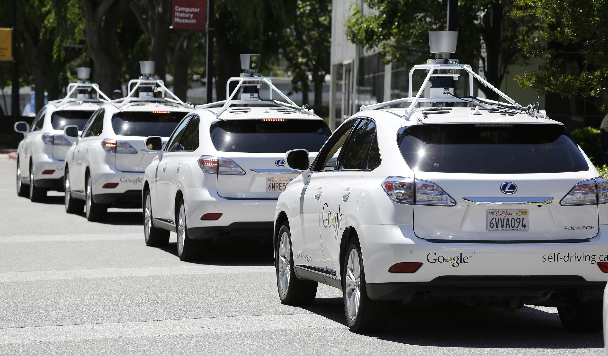
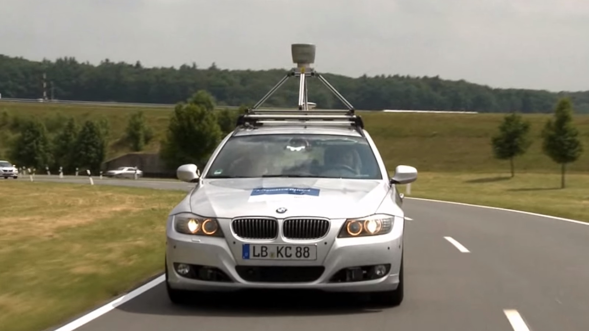

Masini autonome
Acest concept poate parea dintr-un viitor indepartat, dar de fapt s-au construit masini ce pot circula fara interactiunea unei persoane. Acest concept este unul foarte inovator, iar aplicabilitatea ar avea un mare impact asupra numarului de accidente, care ar scadea drastic.

Google doreste ca pana in 2017 sa reuseasca scoaterea pe strazi a masinilor autonome
Elon Musk, fondatorul Tesla vrea ca pasagerii sa "Intre in masini, sa adoarma si sa se trezeasca la destinatie" pana in 2019. Pana in 2020 GM, Mercedes, Audi, Nissan, BMW si Renault se asteapta sa aiba macar masini semi-autonome disponibile.
Lumea va fi intr-un loc mult mai diferit pana cand vom ajunge in 2030. In lume, 1.2 milioane de oameni mor in accidente auto in fiecare an. In USA, 40% din acestea sunt cauzate de consumul de alcool. Computerele nu se imbata, nu sunt neatente, distrase. Deci va trebui sa ne asteptam ca numarul de accidente auto sa se apropie de 0 atata timp cat din ce in ce mai multe masini autonome vor circula pe strazi.